TALKING TO CLAUDE
This round covers proposals in the feed, a name for the channel where claude and you talk, claude's cursor, its first message, and a sweep for UI that had fallen behind the current look. Section 1 and the fixes in section 6 are live in the game. The rest are options with codes, so you can mix and match.
Decided, 1 Nov:
- "Chat" stays Chat for now (NM1).
- The cursor is CU3, the spark with its name, turning while claude works; the name tag now sits right beside it.
- The first message is IN3.
- Anything that wants an answer is marked by a soft band behind the asker's mark and nothing else: no edge, outline or countdown bar.
- The suggestion buttons are gone; the same requests appear in a small menu when you click into the field.
All of these are live in the game.
1 · Proposals live in the feed ● live
A proposal is now an item in the feed, built from the same row as the log: who, icon, text, time. It shows the site (a place link: hover lights it, click goes there), the parts, the cost, and what it does to light and fill (warnings in red). Approve or reject it with the buttons, or with Enter / Del from anywhere. "auto 7 s" counts down to the auto-approve. While it waits, a soft band of claude's colour, a little wider than claude's mark, runs down its left side. That band is the one sign of something asking you; there is no other border.
While a proposal waits, it sticks to the top or bottom edge of the feed, so chatter can't scroll it away. Once answered, it folds to one line with the verdict: approved by you, auto-approved, rejected or withdrawn. Click the line to open it again. Proposals show under All, Log and Chat; under Band they show only while they wait. With the panel collapsed, the rail's claude button shows a ? until you answer. The floating paper card is gone, and so are the separate "Proposed… / approved" log lines; the item records both.
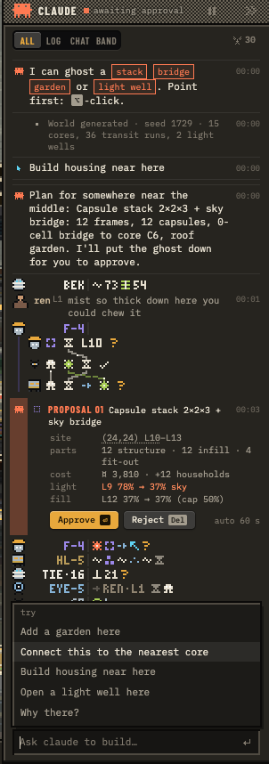
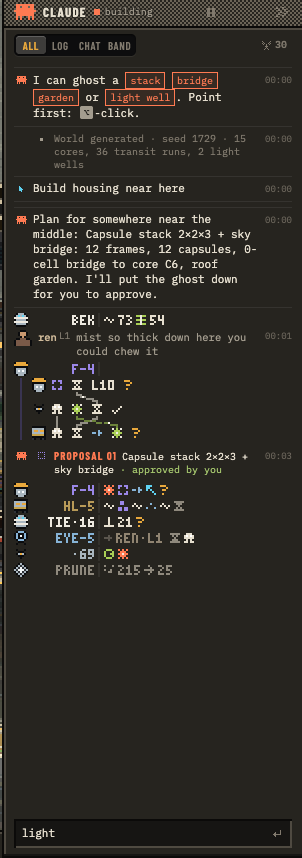
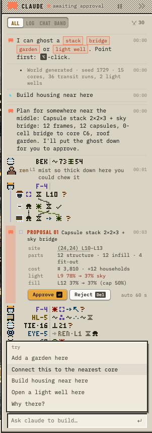
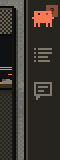
2 · What to call "Chat" kept as Chat for now
The feed has three kinds of thing in it. It helps to say what separates them:
- Log
- What happened to the world, by anyone. Third person, past tense, terse; a record.
- "Chat"
- What's said to you, or by you: your messages, replies, proposals waiting for a yes, questions. Second person. Any agent can speak here, not only claude.
- Band
- The machines talking among themselves. Ambient, mostly untranslated; you overhear it, nobody is asking you anything.
So the line between "Chat" and Band is who it's addressed to, not whether it's speech. "Chat" undersells that and reads as speech, the same as Band. Some names:
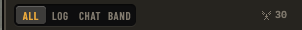
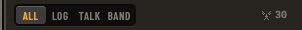
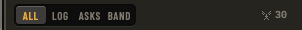
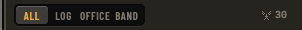
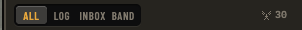
3 · What else could live in Chat
The Desk filter in the real game, with some mocked items placed into the real feed (marked below) beside a live proposal. The idea: anything that wants your attention, or says something to you, lands here as a row of the same kind, and nothing else does.
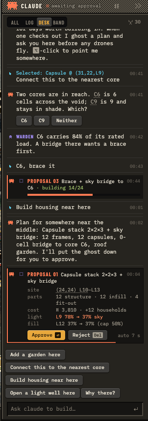
- DK1 Your messages carry their context (live): the pinned place rides along above the text.
- DK2 Questions with quick replies (mock): claude offers the real choices as buttons (C6 / C9 / Neither) and links each one to its place. One click answers it, so you don't have to type.
- DK3 Other agents (mock): a "warden" that watches loads speaks with its own mark and colour. Room for several agents without a second panel.
- DK4 Jobs that report in place (mock): an approved proposal keeps its row and shows progress (building 14/24) instead of being echoed line by line. The log keeps the per-part record.
- DK5 Proposals (live): section 1.
Not on the Desk: per-part placements (Log), survey chatter and bots (Band). Pausing proposals (the ⏸ in the header) silences DK5 without hiding the rest.
4 · Claude's cursor CU3, turning
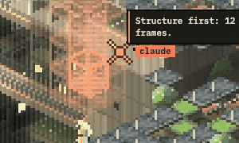
All six are in the game now. Choose one in the world menu (click the SPALL wordmark) under Interface; the choice is remembered. Shown at 3× in the real scene, gazing at a proposal. The shapes get a dark rim so they read on any wall. With a name tag (CU1, CU3) the tag now carries the level ("claude · ↑ L10"), so the canvas plate steps aside and there's one label, not two.
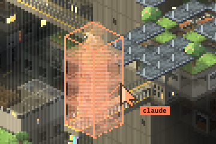
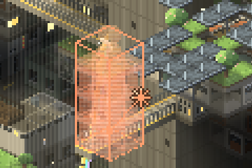
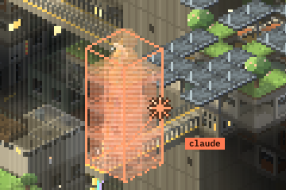
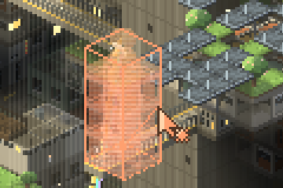
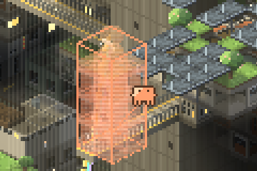
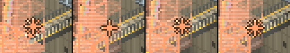
5 · Claude's first message
"I'm the coral cursor…" is gone. IN3 is live now.
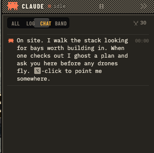
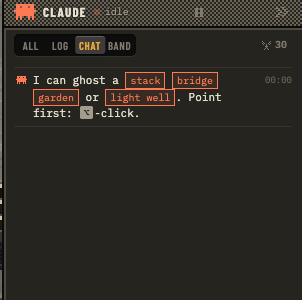
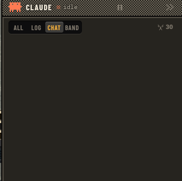
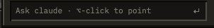
6 · Keeping old UI in step ● live
Things drift when each piece picks its own colours. The stylesheet's header now names the parts new UI is built from, and the build checks for colours that bypass them:
- Colours are tokens. The tone blocks give the chrome tokens (ink, dim, faint, field, hover, tip). Role tokens are defined once with their light-tone inks:
--agent-t,--you-t,--warn,--folkand so on. The canvas has the same in one place,ROLEin10_util.js. - Surfaces:
.pnpanel,.bar,.ttltitle strip, and the new.floatfor anything hovering over the stage (tooltips, toasts, speech). - Controls:
.btn(now with.gofor the primary action),.sgc,.tgl,.sl,.stp,kbd,.chip. - Feed items share one row: who · icon · text · time, for log rows, messages and proposals. Times always show.
build.shlists any colour written straight into a CSS rule. A deliberate one carries araw-colourcomment saying why. It is clean now.
Fixed this round (from a survey of every surface, dark and light):
- The paper proposal card is now the feed item.
- The toast, claude's speech and the stage tooltip use the shared
.floatsurface; they were cream paper and old cool greys. - Chat bubbles became message rows with times.
- Moved to tokens:
- the off-level tag, chips, rail badge and catalog tags;
- help bubbles and the toggle's lit state;
- the light-tone overrides.
- The page behind the app follows the tone: no black band under a light, narrow layout.
- Keys popover (bug): once opened it never hid, and its right column was cut off. Both fixed, and the keys are now key caps.
- Band folk lines show their time, like log rows.
- Segmented buttons no longer wrap ("ON CLICK").
- Scene labels (strata, CUT, the plumb-line plate, hover) use the chrome's warm greys and accent, not cool greys and a second amber.
- Small fixes:
- The world menu no longer says "wires study · sheet 02".
- The light popover's keys are key caps.
- The panel's state text is readable.
- Place links look the same everywhere.
Still open:
- Band: its pixel lines draw their time only when opened (canvas,
88_band.js). Fix this together with the band's own work. - Loading screen: it paints dark even if you saved the light tone, because it runs before any script.
- Colours:
- Wire hover amber (
#f0b43c,62_wires.js) is a hair brighter than the accent. - Plan-view pin plates are cool blues; that may be on purpose for the paper plan.
- Wire hover amber (
- Missing shared pieces:
- One close button: the catalog uses a text ×, the flyouts a pixel ×.
- Corner radii vary across controls (key 2, slider 3, button 4, segmented 5, toggle pill), next to square pixel frames.
- Talk, point and sketch build: its voice turn is a cyan-outlined box (the old bubble look). Three colours in its own CSS bypass the tokens; its build now lists them.
- Dev overlays: the sheets in
97–99still say "STRATUM BUILDING SET". They're console-only and not reachable from the UI.